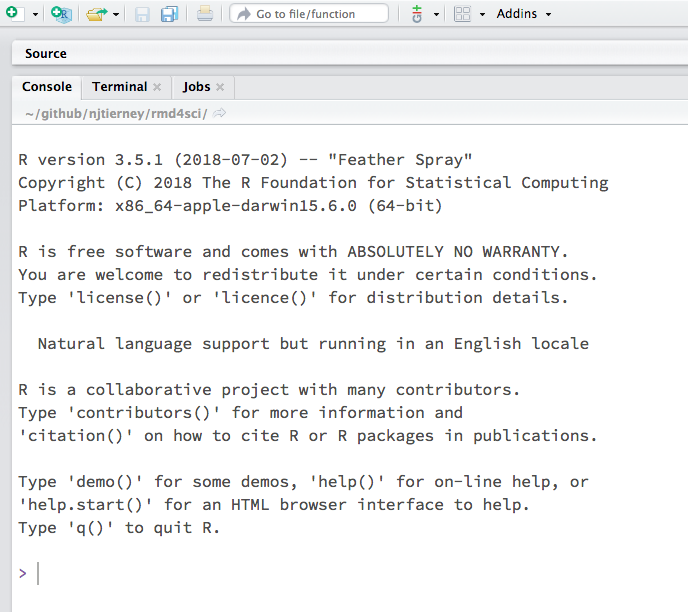
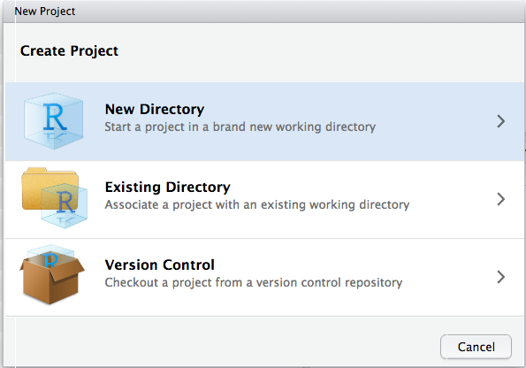
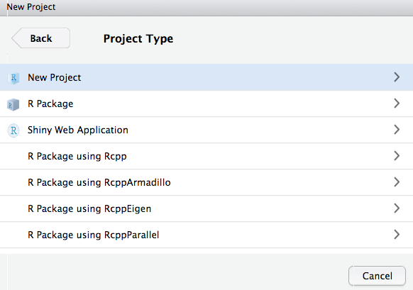
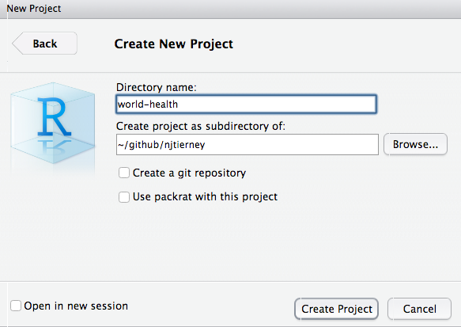

4 Workflow
Before we start with rmarkdown, we need to make sure that you understand file storage hygiene. This helps you keep your files, paths, and directories clean, which prevents unexpected problems. It will make you more productive in the future because you’ll spend less time fighting against file paths. Not sure what a file path is? We explain that as well.
4.1 Overview
- Teaching 10 minutes
- Exercises 10 minutes
4.2 Questions
- Where should I put all my files?
- What is an RStudio project, anyway?
- What is a file path?
4.3 Objectives
- Understand what a file path is
- Set up an RStudio Project to organise your work
- Put some data in your project to set up the next tasks
4.4 Your Turn
In groups of 2-4 discuss:
- What your normal “workflow” is for starting a new project
- Possible challenges that might arise when maintaining your project
4.5 When you start a new project: Open a new RStudio project
This section is heavily influenced by Jenny Bryan’s great blog post on project based workflows.
Sometimes this is the first line of an R Script or R markdown file.
setwd("c:/really/long/file/path/to/this/directory)4.5.0.1 Question
What do you think the setwd code does?
4.5.1 So what does this do?
This says, “set my working directory to this specific working directory”.
It means that you can read in data and other things like this:
data <- read_csv("data/mydata.csv")Instead of
data <- read_csv("c:/really/long/file/path/to/this/directory/data/mydata.csv")So while this has the effect of making the file paths work in your file, it is a problem. It is a problem because, among other things, using setwd() like this:
- Has 0% chance of working on someone else’s machine (this includes you in >6 months)
- Your file is not self-contained and portable. (Think: “What if this folder moved to /Downloads, or onto another machine?”)
So, to get this to work, you need to hand edit the file path to your machine.
This is painful. And when you do this all the time, it gets old, fast.
4.6 What is a file path?
So, this might all be a bit confusing if you don’t know what a file path is. Briefly, a file path is the machine-readable directions to where files on your computer live. So, the file path:
Users/njtierney/rmd4sci-materials/demo-gapminder.RmdDescribes the location of the file “demo-gapminder.Rmd”. This could be visualised as:
users
└── njtierney
└── Desktop
└── rmd4sci-materials
└── demo.R
└── exercises
└── exploratory-data-analysis
└── eda-document.Rmd
└── eda-script.R
└── data
└── gapminder.csvSo, if you want to read in the gapminder.csv file, you might need to write code like this:
gapminder <- read_csv("Users/njtierney/Desktop/rmd4sci-materials/data/gapminder.csv")As we now know, this is a problem, because this is not portable code.
If you have an RStudio project file inside the rmd4sci-materials folder, you can instead write the following:
gapminder <- read_csv("data/gapminder.csv")4.7 Your Turn
(1-2 minutes) What folders are above the
health.csvfile in the following given string?"users/miles/etc1010/week1/data/health.csv"What would be the result of using the following code in
demo-gapminder.Rmd, and then using the code, and then moving this to another location, say inside your C drive?
setwd("Downloads/etc1010/week1/week1.Rmd)4.8 Is there an answer to the madness?
This file path situation is a real pain. Is there an answer to the madness?
The answer is yes!
I highly recommend when you start on a new idea, new research project, paper. Anything that is new. It should start its life as an rstudio project.
An rstudio project helps keep related work together in the same place. Amongst other things, they:
- Keep all your files together
- Set the working directory to the project directory
- Starts a new session of R
- Restore previously edited files into the editor tabs
- Restore other rstudio settings
- Allow for multiple R projects open at the same time.
This helps keep you sane, because:
- Your projects are each independent.
- You can work on different projects at the same time.
- Objects and functions you create and run from project idea won’t impact one another.
- You can refer to your data and other projects in a consistent way.
And finally, the big one
RStudio projects help resolve file path problems, because they automatically set the working directory to the location of the rstudio project.
Let’s open one together.
4.9 Your Turn: Use your own rstudio project
- Run the following code to start a new rstudio project called “rmd4sci-monash”
usethis::use_course("bit.ly/rmd4sci-monash")Follow the prompts to download this to your desktop and then run the rstudio project. (You can move it later if you like!)
You are now in an rstudio project!
4.10 Your turn
- Run the code inside the
demo.Rdocument - Why does the
read_csvcode work? - Run the code inside the
exploratory-data-analysisfolder -eda-script.R. - Does the
read_csvcode work?
4.11 The “here” package
Although tStudio projects help resolve file path problems, in some cases you might have many folders in your r project. To help navigate them appropriately, you can use the here package to provide the full path directory, in a compact way.
here::here("data")returns
[1] "/Users/njtierney/Desktop/rmd4sci-materials/data"And
here::here("data", "gapminder.csv")returns
[1] "/Users/ntie0001/Desktop/rmd4sci-materials/data/gapminder.csv"You can read the above here code as:
In the folder
data, there is a file called health.csv, can you please give me the full path to that file?
This is really handy for a few reasons:
- It makes things completely portable
- Rmarkdown documents have a special way of looking for files, this helps eliminate file path pain.
- If you decide to not use RStudio projects, you have code that will work on any machine
4.12 Remember
If the first line of your R script is
setwd("C:\Users\jenny\path\that\only\I\have")I will come into your office and SET YOUR COMPUTER ON FIRE 🔥.
– Jenny Bryan
4.12.1 Aside: Creating an RStudio project
You can create an rstudio project by going to:
file > new project > new directory > new project > name your project > create project.
You can also click on the create project button in the top left corner

Then go to new directory, if it is a new folder - otherwise if you have an existing folder you have - click on existing directory.

Then go to new project

Then write the name of your project. I think it is usually worthwhile spending a bit of time thinking of a name for your project. Even if it is only a few minutes, it can make a difference. You want to think about:
- keeping it short
- no spaces
- combining words
For example, I have a project looking at bat calls, so I called it screech, because bats make a screech-y noise.
And click “create project”.

Done!
4.13 Summary
In this lesson we’ve:
- Learnt what file paths are
- How to setup an rstudio project
- How to construct full file paths with the
herepackage